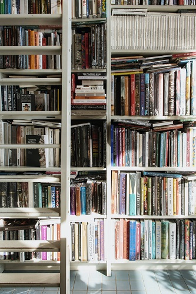

Bienvenidos a LiberArt
Un espacio en Caballito dedicado a los amantes de la literatura y la creatividad. En nuestro acogedor rincón, la pasión por los libros se combina con la fascinación por la escritura, creando un ambiente único para explorar y aprender.
Somos mucho más que una librería: somos un punto de encuentro para lectores ávidos, escritores en ciernes y curiosos de todas las edades. Nuestro compromiso con la literatura independiente y diversa se refleja en nuestra cuidadosa selección de títulos que abarcan géneros, autores y perspectivas diversas.
Ya seas un lector apasionado en busca de tu próximo tesoro literario, un escritor que desea pulir su arte o simplemente alguien que busca sumergirse en el mundo de las letras, ¡te invitamos a descubrir todo lo que nuestra librería tiene para ofrecer!
Quiénes somos
Julio tiene una trayectoria sólida en la enseñanza de literatura. Desarrolló un interés profundo por compartir su conocimiento fuera del entorno académico, buscando crear un espacio más accesible y dinámico para el aprendizaje y la creatividad literaria. Su pasión por la literatura y su habilidad para transmitir conocimientos hayan sido catalizadores para fundar un centro cultural y una librería que ofrece talleres literarios, con el objetivo de inspirar y nutrir el talento de otros amantes de las letras.
Juia es una persona con una profunda pasión por la lectura y una amplia experiencia en el mundo de los libros. Podría tratarse de alguien que ha dedicado su vida a explorar diferentes géneros literarios, participar activamente en clubes de lectura, colaborar en comunidades literarias o incluso haber trabajado en el ámbito editorial. Su entusiasmo por descubrir nuevas historias, autores y perspectivas podría haber sido el motor para co-fundar una librería que ofrece talleres literarios, con el objetivo de compartir esa pasión y promover una cultura de lectura activa y reflexiva en la comunidad.